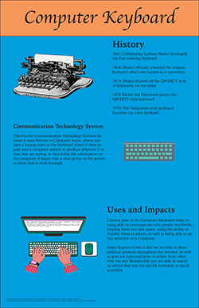

Mathew Lopez Infographic Project |
||
| Home Print Project Digital Photography Video Project Infographic Project | ||
|

Click to view full project here. |
One of the last projects I did in AENG 110 is this Infographic. In this Infographic most people got to choose one of many different objects to do an infographic on its history and how it impacts todays world. I chose a Computer Keyboard which is used by many in todays world and has become something which has been growing since the birth of the first computer. Since many people must use a keyboard to use todays technology, I choose this as my project to do. Overall, I was able to learn more about how this came to be within in the past and when it truly became a keyboard like todays keyboard. |
Home Print Project Digital Photography Video Project Infographic Project |
©2024 Mathew Lopez | ||